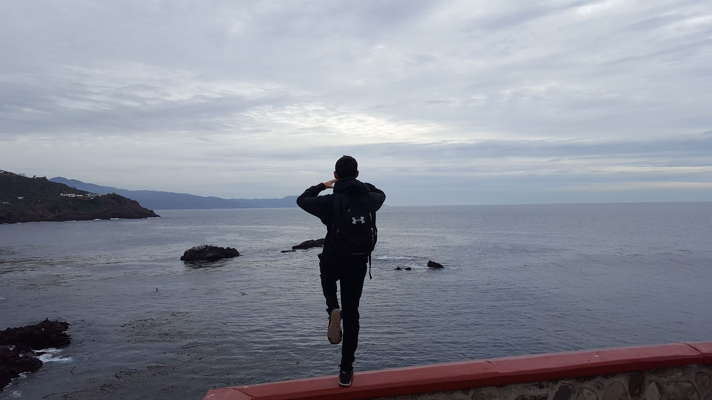
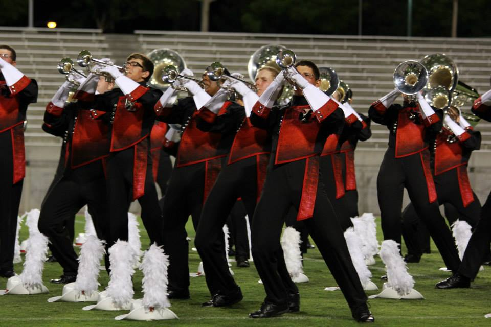
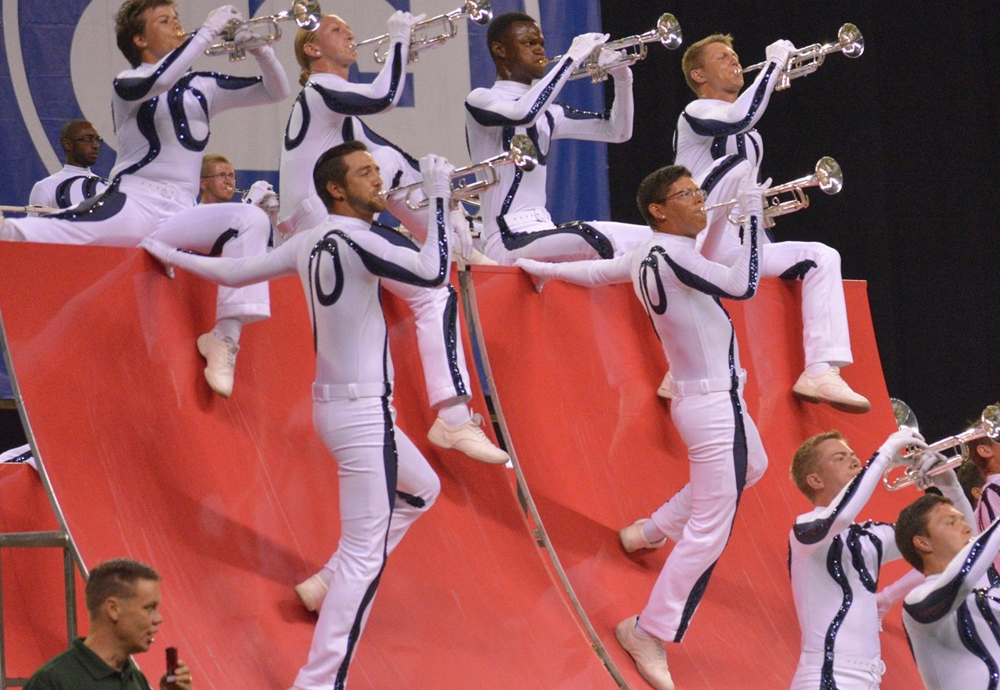

Greetings, my name is James Coleman. I was born and raised here in San Antonio. My hobbies include but not limited to playing computer games and practicing trumpet. I would describe myself as impatient, willful, crass, and objectively aggressive. I graduated from Earl Warren High school in 2012. My current college major is Music Technology. Hopefully I can follow up into a live performance degree so I can create better shows for the mobile DJ company I work for (Quickstrike Ent.). Ideally I'll be producing Live shows at a company owned club, but at the moment, that depends on my own perseverance with current clients. My dream job would include what I am currently doing with the company, but on a bigger scale, bigger audience, bigger stages.

Making music has taken me to a lot of really neat places in my life! This picture was taken on a cliff located at La Bufadora, otherwise known as the "Blowhole". This beautiful area is located in Ensenada, Mexico
Member in the drumcorps for 3 years. Played trumpet all years. The rehearsals consisted of 1 weekend a month starting from December going into April. During May through mid-June, we rehearsed every day for a total of 14 hours every day preparing the show. After spring training, we hit the road to perform in over 30 shows across the country competing against other drumcorps at a world class level.

